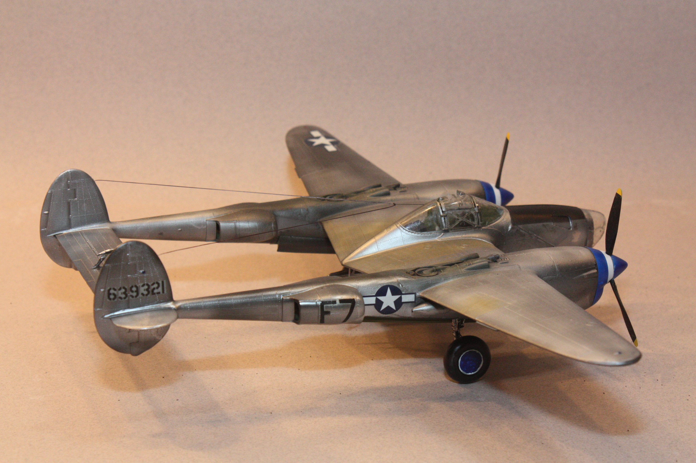
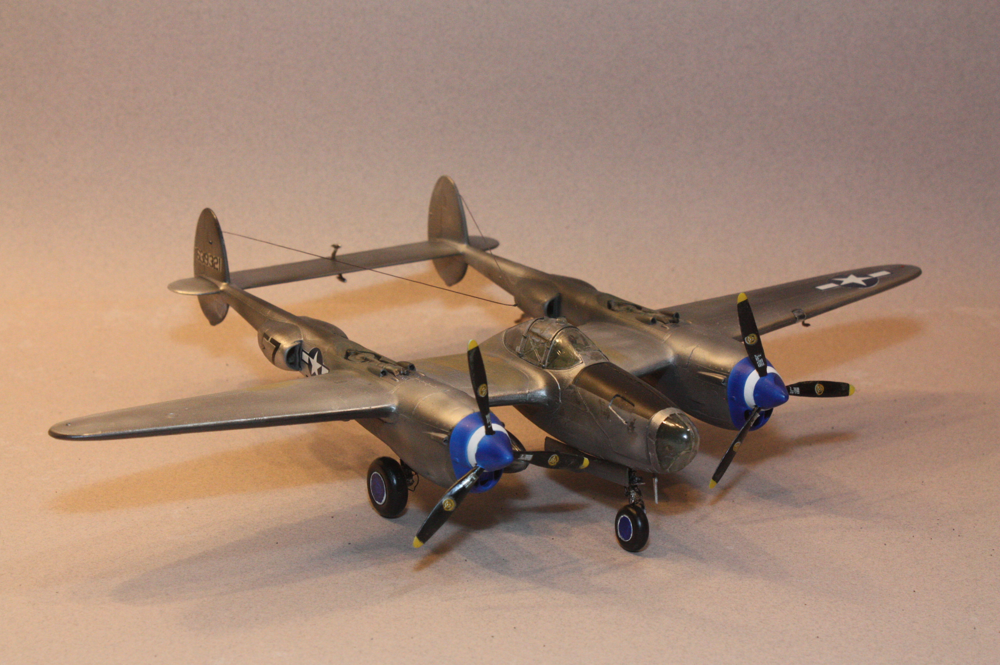

| Kit | P-38J Lightning | ||
|---|---|---|---|
| Manufacturer | Monogram | Scale | 1/48 |
| Kit Number | Price | ||
| Subject Modeled | From the box art | ||
| Start Date | 2015 | ||
| Complete Date | 2015 | ||
I first attempted to build this model of the world's first airplane way back in the fifth grade. My mom had finally found her footing after divorcing my dad, and moved us from our grandparent's house to an apartment in Lake Jackson, Texas. I only remember thinking the kit was way too difficult for a 9-year-old. I could never get the cabane struts to stand in place, properly aligned, so that I could get the upper wing attached. I think I ended up throwing that one in the trash. When I finally decided that I was going to return to this kit, I did so with a bunch more experience building models under my belt. I had even built a few bi-planes with all the rigging that stabilizes the wings together.
 